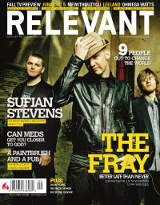

CMnexus
:
Contemporary Christian culture, music, and media.
Browse Magazines
Browse Profiles
cmnexus.org
CM
nexus
→
Profiles
→
F
The Fray
On the cover

September 2006
Relevant
Media coverage:
Mar 2006 in
Relevant
"Spotlights: Going Bananas", by
Monica Monzingo
Sep 2006 in
Group
"Culture: Ministry and Media: The Fray", by
Bryan Belknap
Sep 2006 in
Relevant
"Unraveling The Fray", by
Jeremy Hunt
Feb 2007 in
CCM
"Poets, Preachers & Prophets", by
John J. Thompson
May 2007 in
CCM
"Salt and Light In A Gray World: The Fray", by
John J. Thompson
Jun 2007 in
CCM
"New Noise: The Fray", by
Andrew Schwab
Mar 2009 in
Group
"The Rip Out: Ministry and Media: The Fray", by
Scott Firestone IV
May 2012 in
Relevant
"The Drop: The Fray", by
Heather Meikle
Albums & reviews:
2006
:
How To Save A Life
Jan 2007 in
HM
, by
Chris Callaway
2009
:
The Fray
May 2009 in
HM
, by
Matt Conner
May 2009 in
YouthWorker
, by
Andy Argyrakis
May 2009 in
Worship Leader
2012
:
Scars and Stories
Mar 2012 in
CCM Digital
, by
Matt Conner
2014
:
Helios
1 Jul 2014 in
CCM Digital
, by
Andy Argyrakis
CMnexus
(noun)
The magazine index
of modern music
and Christianity
© 2011 CMnexus. Last updated September 2019.
Contact:
Rants and other correspondence to:
editor -AT- cmnexus
-DØT- org
About